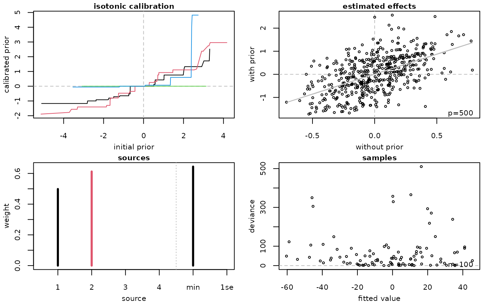

Plot transreg-object
plot.transreg.RdPlot transreg-object
Usage
# S3 method for class 'transreg'
plot(x, stack = NULL, ...)Value
Returns four plots.
top-left: Calibrated prior effects (\(y\)-axis) against original prior effects (\(x\)-axis). Each line is for one source of prior effects, with the colour given by
grDevices::palette()(black: 1, red: 2, green: 3, blue: 4, ...).top-right: Estimated coefficients with transfer learning (\(y\)-axis) against estimated coefficients without transfer learning (\(x\)-axis). Each point represents one feature.
bottom-left: Estimated weights for sources of prior effects (labels 1 to \(k\)), and either estimated weights for
lambda.minandlambda.1semodels (standard stacking) or estimated weights for features (simultaneous stacking).bottom-right: Absolute deviance residuals (\(y\)-axis) against fitted values (\(x\)-axis). Each point represents one sample.
References
Armin Rauschenberger, Zied Landoulsi, Mark A. van de Wiel, and Enrico Glaab (2023). "Penalised regression with multiple sets of prior effects". Bioinformatics 39(12):btad680. doi:10.1093/bioinformatics/btad680 . (Click here to access PDF.)
Examples
#--- simulation ---
set.seed(1)
n <- 100; p <- 500
X <- matrix(rnorm(n=n*p),nrow=n,ncol=p)
beta <- rnorm(p) #*rbinom(n=n,size=1,prob=0.2)
prior1 <- beta + rnorm(p)
prior2 <- beta + rnorm(p)
prior3 <- rnorm(p)
prior4 <- rnorm(p)
y <- X %*% beta
prior <- cbind(prior1,prior2,prior3,prior4)
object <- transreg(y=y,X=X,prior=prior,alpha=0,stack=c("sta","sim"))
plot(object,stack="sta")
